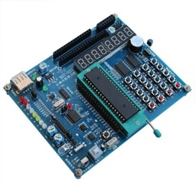

初识51单片机
51单片机算是应用最广泛的8为单片机，它是所有兼容Intel 8031指令系统的单片机的统称。51单片机应用广泛占有很大的市场。
我一般所用的是STC（国产宏晶）89C52的芯片。
现在的主要产品有:
Intel(英特尔)的：80C31、80C51、87C51，80C32、80C52、87C52等；
ATMEL(艾德梅尔)的：89C51、89C52、89C2051，89S51（RC），89S52（RC）等；
Philips(飞利浦)、华邦、Dallas(达拉斯)、Siemens(西门子)等公司的许多产品；
STC(国产宏晶)单片机：89c51、89c52、89c516、90c516等众多品牌。
51单片机在生活中的应用
自动化技术。单片机属于控制类数字芯片，工业上，农业上，我们的自动化技术都可以用单片机实现。
智能测量仪器。比如一些智能化的测量设备，比如我们经常使用的万用表。
家用、商用电子产品。比如我们平时用的微波炉，公司的门禁系统等等
通信。比如我们上网用的“猫”，还有我们的手机，这些都可以用单片机实现。
军事领域。导弹、飞机、坦克和潜艇等都可以利用单片机来增强它们的威力。
人工智能领域，比如机器人，房屋调控系统，我们对单片机进行编程，就能让其为我们工作。
学习51单片机我们需要哪些基础知识
知识上，其实不需要多少东西，会简单的C语言，知道51单片机的基本结构就可以了。学习板以强大的接口为主，单片机的学习分两方面，一方面是单片机的原理及内部结构，另一方面是单片机的接口技术。这些都是需要平时多积累，多动手，多思考，这样才能学好单片机技术。自学过这2门课程的高中生也够条件。
单片机的结构
一台能够工作的计算机要有这样几个部份构成：CPU（进行运算、控制）、RAM（数据存储-内存）、ROM（程序存储）、输入/输出设备（例如：串行口、并行输出口等）。在个人计算机上这些部份被分成若干块芯片，安装一个称之为主板的印刷线路板上。而在单片机中，这些部份，全部被做到一块集成电路芯片中了，所以就称为单片机。
我们在初学51单片机时会用到开发板,是用于学习51型号的单片机的实验及学习器件，他是将51单片机常用的外围。比如流水灯，数码管，矩阵键盘，EEPROM，时钟，蜂鸣器，继电器及集成在一小块电路板上。便于携带及学习，直接插在PC机上面。随时随地的进行学习，另外一些中小型项目也可以直接在此板上面进行二次开发，开发完成后即可以在此基础上面重新画图做板，极大的缩短了公司的开发周期，节省硬件成本。
 51开发板常见配套资源如下：
1、硬件实验板及期配件如：杜邦线、单片机芯片、流水灯、点阵显示、ds18b20温度检测等等。
2、实验程序源码，包含汇编源程序、C语言源程序。
3、电路原理图、PCB图。
4、实验手册、使用手册。
5、附加PCB设计制作、VB软件开发等计算机学习资料。
我们可以用51单片机去做一些小的项目，如图中的立方灯和1602贪吃蛇